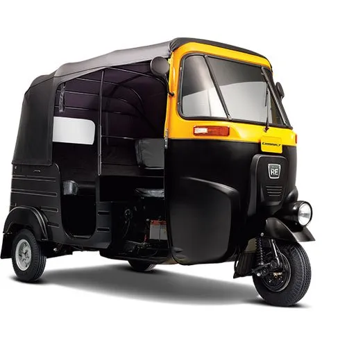
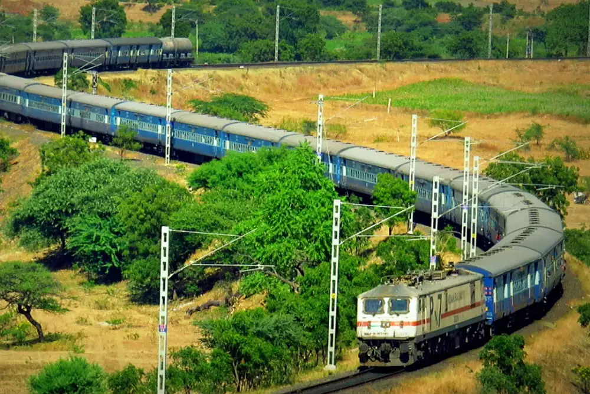
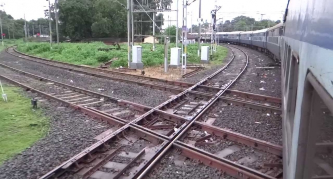
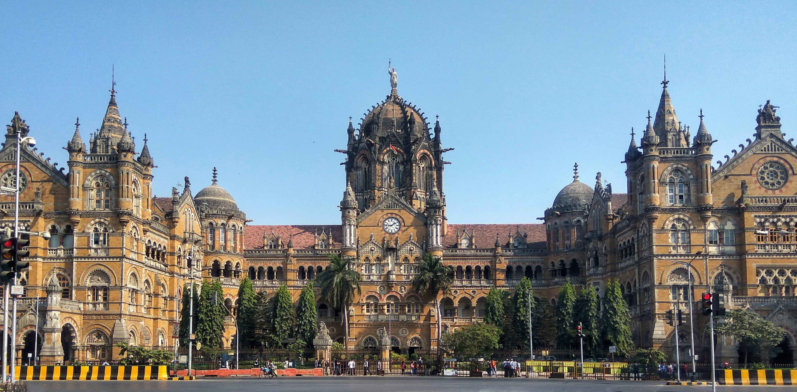
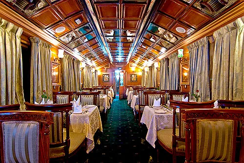

Compared to modern cars, auto rickshaws are more environment-friendly and run on compressed natural gas (CNG)
Electric appliances like bulbs, fans, and sockets function at 110 volts on the railway coaches, whereas other transports require 220 volts.

2. Economy
Being the largest employer in the country, Indian Railways employ an estimated 1.4 million people.
Several people earn a livelihood through railways by selling goods and services at the stations and trains.

3. Tourism
India possesses the world’s longest railway platform, 1,366 metres in length, at the Gorakhpur Railway Station in Uttar Pradesh. However, this title of Gorakhpur station will soon be transferred to Hubli Junction Railway Station, Karnataka. The under construction platform is 1,505 metres in length.
Indian Railways owns 4 UNESCO recognised world heritage sites. They are Darjeeling Himalayan Railway, Chhatrapati Shivaji Terminus in Mumbai , Nilgiri Mountain Railway, and Kalka Shimla Railway.
Indian Railways owns 5 royal trains, namely Royal Rajasthan on Wheels, Palace on Wheels, The Golden Chariot, The Maharajas’ Express and The Deccan Odyssey.

Challenges
India’s roads are congested and of poor quality. Lane capacity is low. A quarter of all India's highways are congested.
Auto-rickshaw fares have increased by Rs.2, thereafter costing Rs.14 for every kilometre from August 1 2022